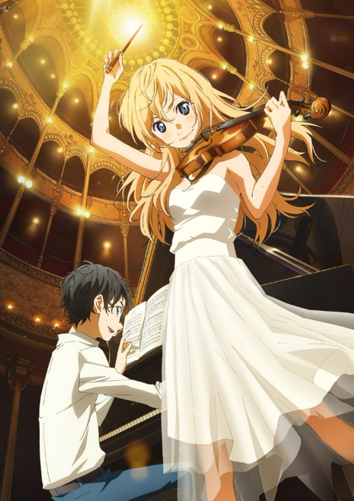
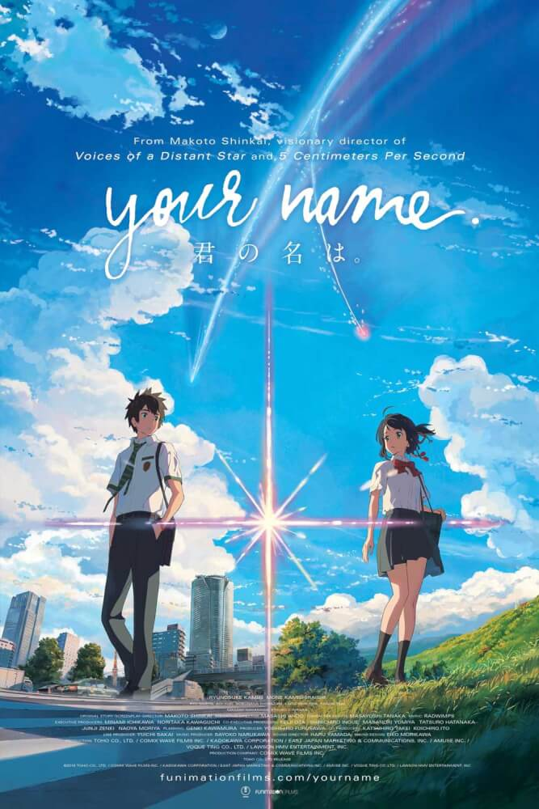

Твоя апрельская ложь
История о талантливом пианисте Косэе Ариме, который после трагического события потерял способность слышать музыку, и о яркой скрипачке Каори Миядзоно, которая постепенно возвращает его к жизни. Это трогательная история о боли, дружбе, любви и силе музыки.
Описание
Косэй Арима — вундеркинд, чья игра на фортепиано в детстве покорила весь мир. Однако после смерти матери он теряет способность слышать собственную музыку и больше не может играть.
Его жизнь меняется, когда он встречает Каори Миядзоно — талантливую и свободолюбивую скрипачку. Она помогает ему вновь почувствовать красоту звуков и увидеть мир в новых красках.
«Твоя апрельская ложь» — трогательная история о взрослении, любви, утрате и силе искусства, которая остаётся в сердце надолго.
Персонажи
Все персонажи › Косэй Арима
Главный герой
Косэй Арима
Главный герой
 Каори Миядзоно
Главная героиня
Каори Миядзоно
Главная героиня
 Цубаки Савабэ
Подруга
Цубаки Савабэ
Подруга
 Рёта Ватари
Друг
Рёта Ватари
Друг
 Эми Игава
Соперница
Эми Игава
Соперница
Похожие аниме
Все аниме ›
Твоё имя Вайолет Эвергарден
Вайолет Эвергарден
 Анохана
Анохана
 Кланнад
Кланнад
 Форма голоса
Форма голоса